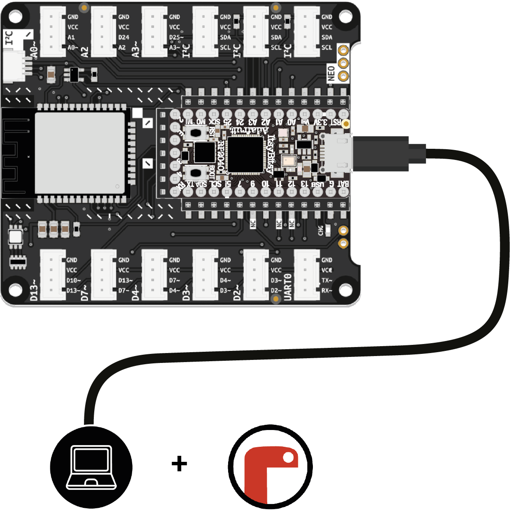

These are the tools and equipment you need to get started:
The ItsyBitsy microcontroller and its Expander form the hardware platform you will be using. When connected to your computer using the included USB data cable, the ItsyBitsy will appear as a storage device called CIRCUITPY.
You could, in theory, use any text editor to write programs for your microcontroller. In practice, you should always use a code editor, as it will simplify things greatly. The Mu Editor is free, open-source, and great for beginners. It spots errors, highlights important code passages, and helps structure your program. It has excellent CircuitPython support and offers important features for working with microcontrollers.
